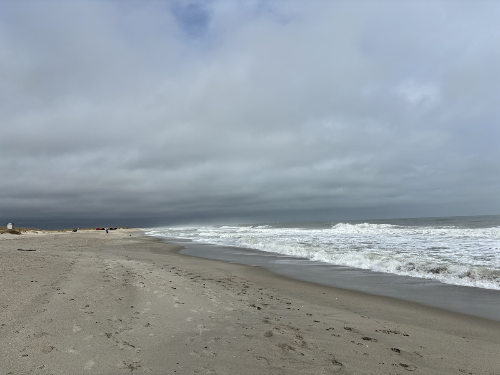

Introduction

The people at the Program for the Study of Developed Shorelines at Western Carolina University gathered data on more than 2500 episodes of beach nourishment in the USA since 1925 and offer visualizations and tables on their website. I downloaded the data for North Carolina so that I could look at it in other ways to understand better the scale, cost, and trends related to shore protection and navigation in NC, where I live.
Given the significant growth in coastal population and development over the last 50 years1, rising sea levels2, coastal land subsistence3, and increases in the severity and impact of storms4, I expected to find more nourishment episodes in recent years, in more places, with more volume of sand moved. In which case, if the cost per volume for beach nourishment increased or remained roughly similar over the decades (in constant dollars), increasing number of episodes (and thus volume) would translate into increasing cost.
Indeed that is the story in the data… with some interesting dynamics within the larger trend.
Note that beach erosion and the natural filling of near-shore navigation channels create many other costs born by private and governmental groups which are not reflected here, including houses collapsing into the surf, and moving lighthouses away from encroaching shoreline.
For more information
Storm-Induced Coastal Change5
Climatology of Tropical Cyclones in Eastern North Carolina 1851-20206
Explanation of terms
“Beach nourishment” refers to placing sand taken from elsewhere onto a beach or dune, either to replace eroded sand, or to make good use of sand removed while dredging to improve navigation channels. In North Carolina nearly all episodes are for shore protection, navigation, or emergency beach repair.
I reprint the following definitions found at https://beachnourishment.wcu.edu/glossary.
Justification: The primary reason why a beach was nourished. These include:
- Bypass: Artificially moving sand from an updrift beach to a downdrift beach to bypass a natural or artificial obstruction such as an inlet or jetty.
- Coastal Impact Assistance Program: Federal grant funds derived from federal offshore lease revenues to the oil-producing states of Alabama, Alaska, California, Louisiana, Mississippi and Texas for conservation, protection, or restoration of coastal areas.
- Demonstration: A US Army Corps of Engineers experimental effort that places sand in an offshore location, rather than directly on a beach.
- Ecosystem Restoration: An effort to reestablish or improve coastal habitat that has been degraded or damaged by natural or human activities.
- Emergency: Designed to create an artificial beach berm to provide a minimum level of protection to vulnerable coastal development, usually post-storm. All Federal nourishment episodes classified as Emergency are funded through FEMA or the US Army Corps of Engineers.
- Emergency Dune: Designed to construct an artificial dune to provide a minimum level of protection to vulnerable coastal development, usually post-storm.
- Navigation: Sediment (known as dredge spoil) resulting from a navigation-related dredging effort is placed on a beach rather than dumped offshore or in an upland location.
- Section 111: Mitigation of shoreline damages attributable to Federal navigation structures (jetties).
- Shore Protection: Nourishment episodes undertaken for the primary purpose of reducing storm-related damage to static human economic development placed behind dynamic shorelines.
Length: The linear distance of shoreline upon which sediment has been emplaced, measured in feet.
Primary Funding Source: The public or private entity providing the majority of the funding for a nourishment episode. These include:
- Federal: Tax dollars spent by the US Army Corps of Engineers or FEMA.
- Local: Tax dollars spent by the administration of a particular town or district with representatives elected by those who live there.
- Private: Funds provided by a non-governmental entity having no official or public role or position.
- State: Funds provided by members or representatives of a unit of government that specifically makes and enforces laws for a state.
Volume: Volume is the quantity of sand emplaced on a beach during a beach nourishment episode measured in cubic yards.
Year Completed: The year in which a nourishment episode was completed. Beach nourishment typically commences in the late fall/early winter due to environmental and ecological concerns. As a result, nourishment episodes usually begin at the end of the year and wrap-up early the next year.
Acknowledgements
Thanks to the people and organizations that made data available
- Program for the Study of Developed Shorelines at Western Carolina University
- NOAA shoreline GIS data from the Global Self-consistent, Hierarchical, High-resolution Geography Database (GSHHG)
- U.S. Census TIGRIS database (accessed via the tidycensus package)
- GeoNames lookup service
- Hat tip to Jeremy Signer-Vine for Data Is Plural 2024.07.03 edition, where I learned about the beach nourishment data.
National Coastal Population Report: Population Trends from 1970 to 2020. NOAA Office for Coastal Management. https://coast.noaa.gov/digitalcoast/training/population-report.html ↩︎
As sea level rise accelerates, Carolinas’ coast is at risk. WFAE | By David Boraks. Published February 19, 2022 at 6:58 AM EST https://www.wfae.org/energy-environment/2022-02-19/as-sea-level-rise-accelerates-carolinas-coast-is-at-risk ↩︎
Johnston, J., Cassalho, F., Miesse, T. et al. Projecting the effects of land subsidence and sea level rise on storm surge flooding in Coastal North Carolina. Sci Rep 11, 21679 (2021). https://doi.org/10.1038/s41598-021-01096-7 ↩︎
Frankson, R., K.E. Kunkel, L.E. Stevens, D.R. Easterling, W. Sweet, A. Wootten, H. Aldridge, R. Boyles, and S. Rayne, 2022: North Carolina State Climate Summary 2022. NOAA Technical Report NESDIS 150-NC. NOAA/NESDIS, Silver Spring, MD, 5 pp. NOAA National Centers for Environmental Information | State Climate Summaries 2022 150-NC. LEAD AUTHORS: Rebekah Frankson, Cooperative Institute for Satellite Earth System Studies (CISESS), Kenneth E. Kunkel, Cooperative Institute for Satellite Earth System Studies (CISESS), CONTRIBUTING AUTHORS: Laura E. Stevens, Cooperative Institute for Satellite Earth System Studies (CISESS), David R. Easterling, NOAA National Centers for Environmental Information, William Sweet, NOAA National Ocean Service, Adrienne Wootten, South Central Climate Adaptation Science Center, University of Oklahoma, Heather Aldridge, North Carolina State University, Ryan Boyles, Southeast Climate Adaptation Science Center, U.S. Geological Survey, Sandra Rayne, NOAA Southeast Regional Climate Center, University of North Carolina at Chapel Hill. https://statesummaries.ncics.org/chapter/nc/. Also in PDF at https://statesummaries.ncics.org/downloads/NorthCarolina-StateClimateSummary2022.pdf ↩︎
Storm-Induced Coastal Change. St. Petersburg Coastal and Marine Science Center June 4, 2020. U.S. Geological Survey, U.S. Department of the Interior. https://www.usgs.gov/centers/spcmsc/science/storm-induced-coastal-change ↩︎
Tropical Cyclone Climatology 1851-2020. Zachary P. Sefcovic, 2012 NOAA Hollings Scholar, Valparaiso University, Valparaiso, Indiana. 2018-2020 Updates by Spencer Sherman, 2023 Student Volunteer, East Carolina University. U.S. National Weather Service, NOAA. https://www.weather.gov/mhx/TropicalClimatology ↩︎